Brand direction · Draft 1

Different roads. One ribbon.
LSSQ is somewhere new every month, with the same family every time. The ribbon says that: one line that never lifts off, with three stripes that always travel together. Everything here grows from it.
Built on option F from round 1. A draft for Steve's review, November 12, 2026. This isn't LSSQ's official brand.
The idea
One line that never lifts off.
Keep it moving
One continuous line. Shapes flow into each other instead of sitting still in boxes.
Warm, not slick
Soft type, sunset tints and a little glint. It should feel like a road trip, not a startup.
Side by side
Three stripes, always together and always in the same order, like the people who show up.

Logo
The ribbon, standing still.
Use the still logo almost everywhere. Where the full name won't fit, use the Q.


Clear space
Keep one ribbon's width clear on every side, about a quarter of the logo's height.
Smallest sizes
The wordmark goes down to 96px wide. Below that, switch to the Q, which holds down to 16px.
Stripe order
On a straight run it's cyan, yellow, pink, top to bottom. Always all three, always in that order.
Please don't
Add an outline or a shadow.
Change the colors or their order.
Stretch, squash or tilt it.
- LSSQ
Type "LSSQ" in a font instead.

Motion
Draw it in for big moments.
The logo is still by default. Save the draw-in for special moments: the site's first visit, event announcements, video intros and reels.
- Write. Each stripe writes the whole word in turn, 2.7 seconds each, 0.4 seconds apart.
- Sweep. Once the bowl is done, the Q's tail sweeps over it.
- Glint. A glint runs across and a star twinkles, so it's clear it's over. About 5 seconds in all.
With reduced motion turned on, it just shows the finished logo.
Color
Three stripes, two grounds.
The stripes carry the color. Black and cream do the rest of the work, so the stripes always pop.
- Outline cyan
#36E2E6Fades from #63E9EC to #1BD4D8. Links, labels, wellness. - Record yellow
#F2C230Fades from #F5D060 to #EAB40F. Main buttons, dates, play. - Banner pink
#E2397AFades from #E96598 to #D31F64. Highlights, big type, music.
- Turntable black
#141818The main ground. Screens, the site, dark merch. - Cream
#FFF6E8Text on black, and the ground for posters and print.
- Panel
#1C2323Cards - Line
#2A3333Borders - Muted
#A9B7B4Secondary text - Deep pink
#C42566Pink text on cream - Lavender
#B79CF0A rare extra
Pairs that read
- AaCream on black16.7 : 1
- AaYellow on black10.7 : 1
- AaCyan on black11.2 : 1
- AaPink on black4.3 : 1, big type only
- AaBlack on cream16.7 : 1
- AaDeep pink on cream5.2 : 1
- AaBlack on yellow10.7 : 1
- AaBlack on cyan11.2 : 1
Pink is for stripes, shapes and big type. Put small text on yellow or cyan in black, never in cream.
Typography
Soft headlines, clear text.
A warm 70s headline face, cut our own way, over the clean sans LSSQ already uses.
Headlines · Fraunces, LSSQ setting
Your people are out here.
Aa Bb Cc Dd Ee Ff Gg Hh Ii Jj Kk Ll Mm Nn Oo Pp Qq Rr Ss Tt Uu Vv Ww Xx Yy Zz 0123456789
Text · Urbanist
Different location every month. Same family every time. Bring a chair, something to share and whatever you're good at.
Labels · Urbanist
Next up · Baja coast · Nov 27 to 29
Side Quest
Stripe echo
Our own treatment for event names and big headlines. On screen it rests in solid cream with a slow glimmer. On hover, the three stripes bounce out one at a time, at the same 41 degree angle as the links in the logo. In print, use it finished. Big sizes only, once per page.
Hover the cardTap the card to see it come in.
| Style | Size / line | Use |
|---|---|---|
| Display | 96 / 0.95 | Event names, hero lines |
| Headline 1 | 60 / 1.0 | Page titles |
| Headline 2 | 36 / 1.05 | Sections |
| Headline 3 | 20 / 1.2 | Cards, small heads |
| Body | 17 / 1.55 | Everything you read |
| Label | 13, caps | Dates, places, tags |
- Sentence case for headlines. Short and warm.
- Never type "LSSQ" as a headline. Use the logo. In text, write Last Saturday Side Quest, or LSSQ for short.
- Fraunces is for headlines only. Everything else is Urbanist.
Patterns
Cut from the same ribbon.
Every pattern uses the logo's three stripes, widths and gaps, so it all feels like one family.
Road
The ribbon snaking along. Section edges, footers and merch.
road.svgArches
A row of rainbow sunrises. Along the bottom of posters and headers.
arches.svgLink
The 41 degree angle between letters, as a field. Big backgrounds and the backs of shirts. Pure CSS.
Band and corner
Dividers, and a corner to frame photos.
f-stripe-band.svgGlints
The star that ends the animation. A light scatter around big moments.
glints.svgSunset fade
Each stripe is a touch lighter at the top and deeper at the base. In the color logo only.


In use
How it comes together.
Last Saturday Side Quest
Baja Weekend
Fri to Sun · Nov 27 to 29
On the coast, south of Ensenada
Your people are out here.
- Events
- About
- Donate
Next up · Nov 27 to 29
Your people are out here.
A weekend of music, play, wellness and connection, somewhere new every month.
See upcoming eventslastsaturdaysidequestDifferent location every month. Same family every time.See you out there.
LSSQ · Baja WeekendWho's bringing the speaker?Last Saturday Side Quest
On site
Out where your people are.
The ribbon is simple enough to tape, paint, stitch or project, so it can show up all over an event.
Sample photos made with AI, with the real logo placed in. None of these are real LSSQ events.
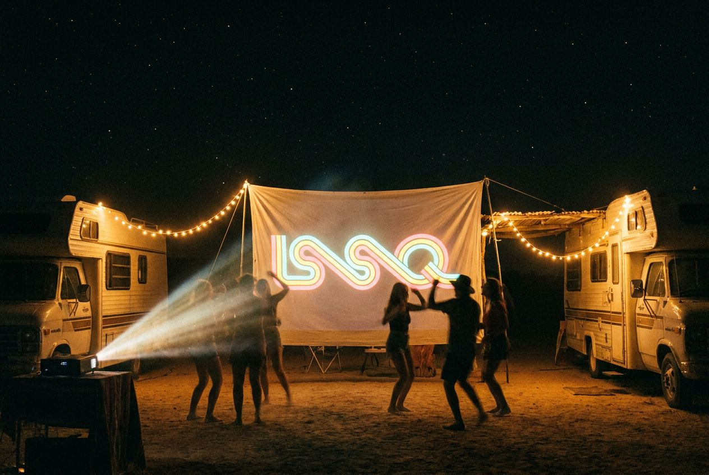
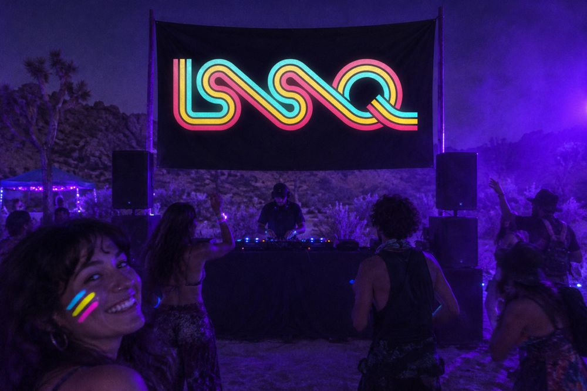
Blacklight bannerThe stripe colors glow under UV. Face paint to match. 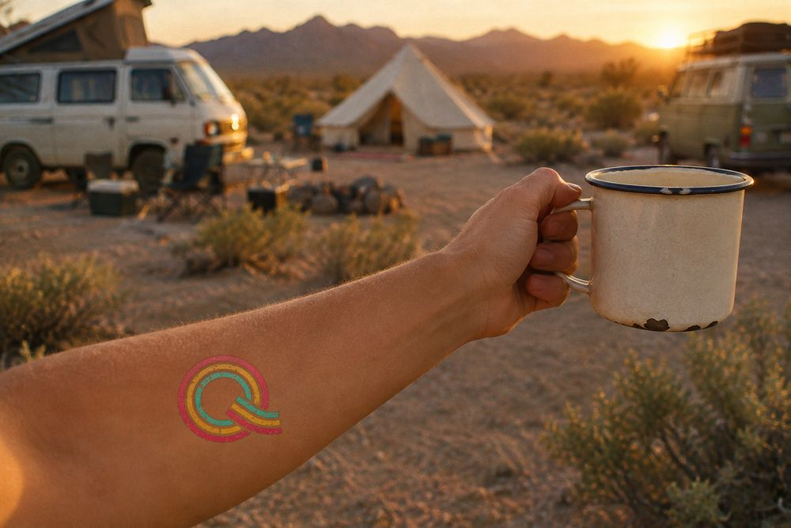
Monthly tattooThe Q, with a new one each month. Collect them all. 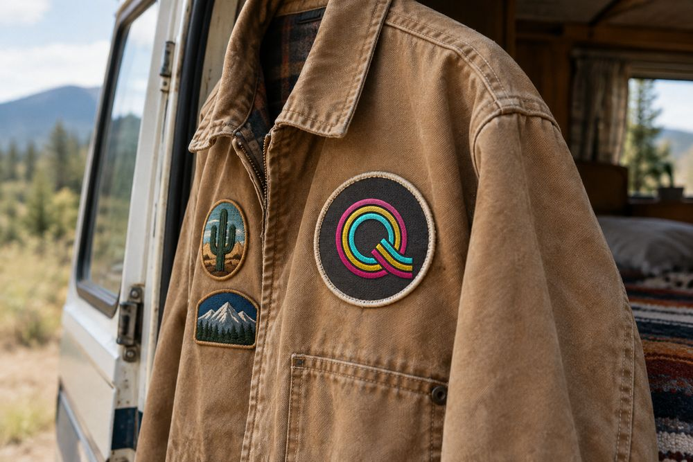
PatchStitched for jackets and bags. Add a small one for each place. 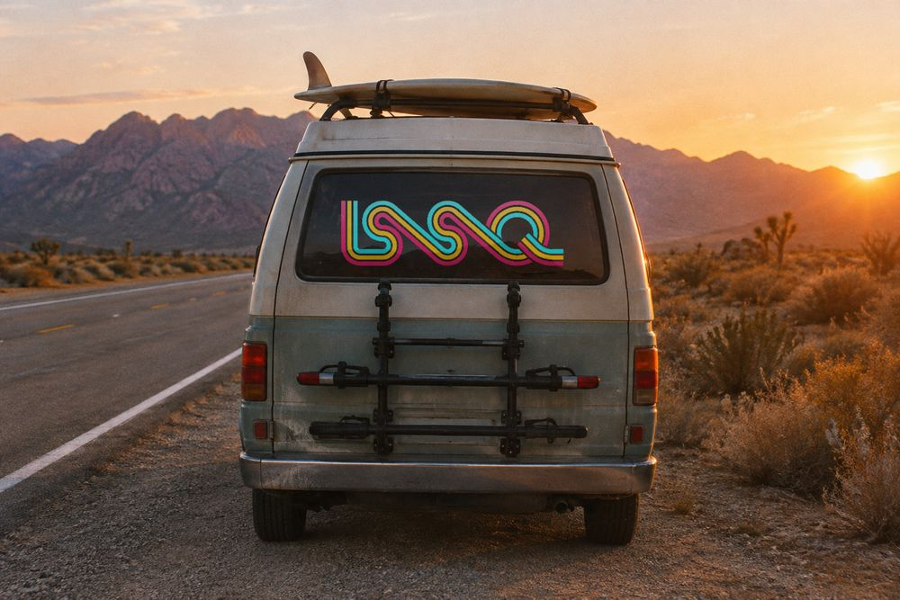
Window clingSo LSSQ vans can spot each other on the road. 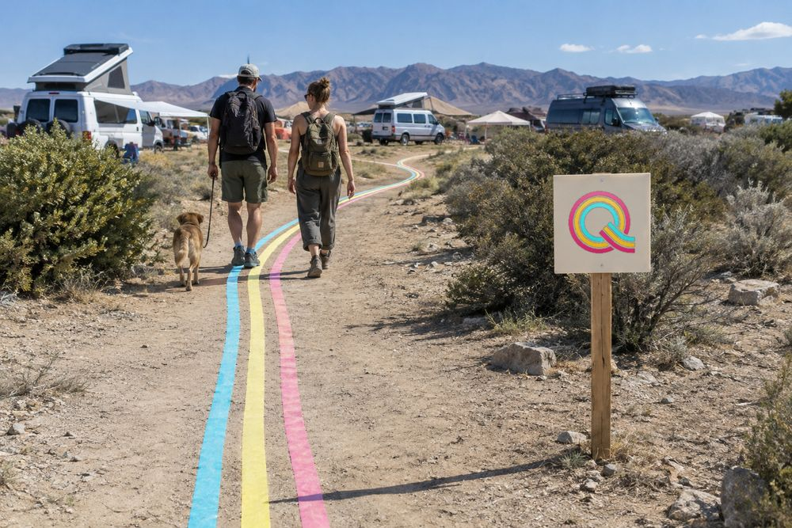
Taped roadThree rolls of tape lead the way to camp, then peel right up. 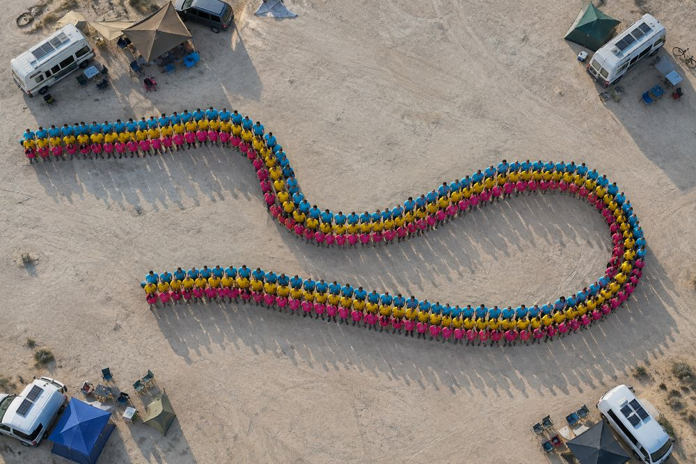
Human ribbonEveryone wears a stripe color for one drone photo each month. 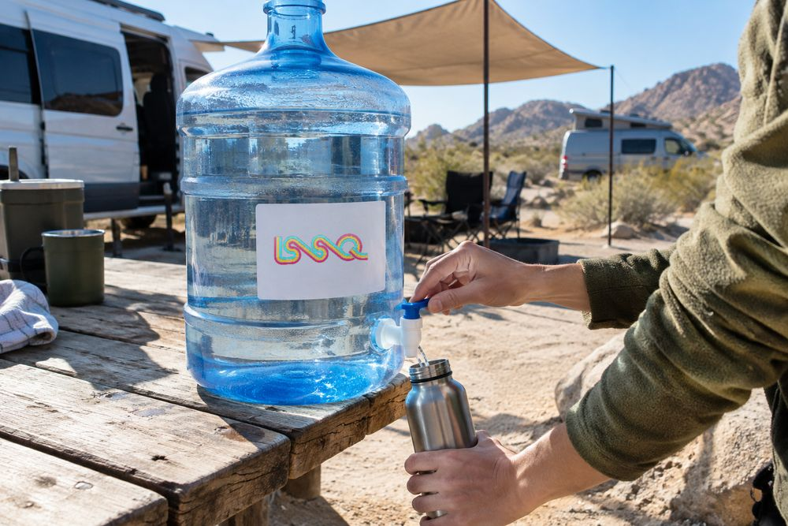
Refill stationA sticker on the shared water jug. 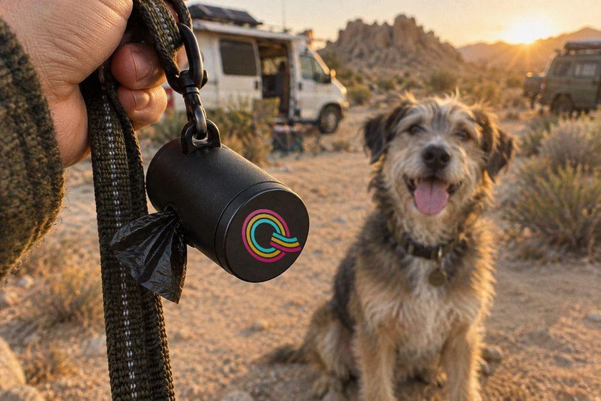
Poop bagsEvery camp has dogs. Every dog walk gets a Q. 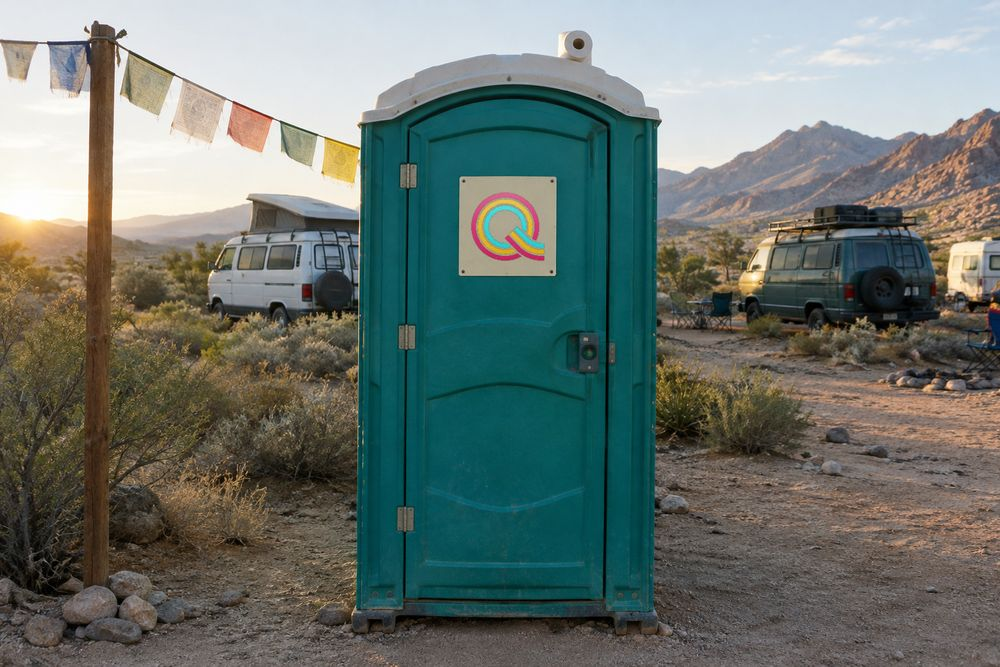
Porta-pottyEven here. Especially here.
Voice
Warm, playful, communal.
"Your people are out here."
Not
"Join our vibrant community of digital nomads.""Bring a chair and something to share."
Not
"Attendees are encouraged to contribute.""See you at the next one."
Not
"Stay tuned for future events."
What's next
Steve reviews this direction. Then it goes to Jake, and on into the rebuilt site.